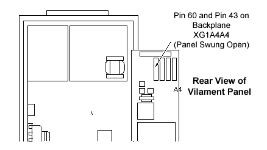

Operating Documentation
Direction 5112972-800, Rev# 2
CT Planned Maintenance Procedures
Operating Documentation |
| Required Persons | Preliminary Reqs | Procedure | Finalization |
|---|---|---|---|
| 1 | Timing Not Applicable | 15 mins | Timing Not Applicable |
Procedure Effectivity:
| Assembly: | GENERATOR |
| Subassembly: | Power Unit |
| Purpose: | Verify Exposure Time |
| Last Revised: | July 1995 |
| Item | Qty | Effectivity | Part# | Manufacturer | |
|---|---|---|---|---|---|
| Oscilloscope | 1 | - | - | - | |
Make the following interconnections between the oscilloscope and test board XG1A4A4 of the x-ray power cabinet. (See Illustration 1).
Connect channel 1 probe to A4 pin 60 (kV meter) and connect channel 2 probe to A4 pin 43 or 45 (Primary LED) and scope ground to TP6 on the XG1A4A4 board.
For axial scan exposure time, at M-level, execute a 2 second and an 8 second axial scan at 120 kVp and 100 mA.
Verify that the measured value for the 2 second and 8 second axial scans are accurate to within +/- 5% for exposure times.
(2.0 sec - 1.92 - 2.08 sec)
(8.0 sec - 7.75 - 8.25 sec)
For scout scan exposure time, at M-level, perform three scout scans at 120 kV, 100 mA as tabulated below:
| CRADLE TRAVEL (mm) | CRADLE SPEED (mm/sec) | CRADLE TIME(s) | SPEC LIMIT TIMES (MIN) | SPEC LIMIT TIMES (MAX) |
| 20 | 75 | 0.26 | .247 | .307 |
| 150 | 75 | 2.0 | 1.92 | 2.08 |
| 300 | 37.5 | 8.0 | 7.75 | 8.25 |
An alternate method is to measure the times of the kV waveform on your oscilloscope. This would only be easier if you had a bleeder already connected.
Illustration 1: Accessing The Test Board For Scope Connections

No finalization required.